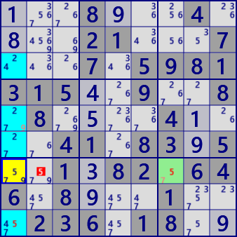
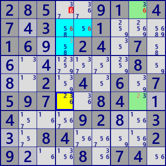
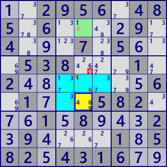
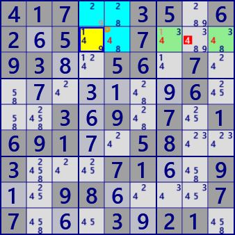

ALS Death Blossom(Enhanced)
DeathBlossom is an analysis algorithm based on the arrangement of ALS with a mysterious name.
i explain ALS DeathBlossom's evolutionary algorithm. In the explanation, XYZ-Wing,
ALS DeathBlossom(basic) are assumed.
See ==> DeathBlossom...Further development (Algorithm consideration)
- XYZ-Wing consists of an axis cell and multiple BivalueCells.
There are weak links in excluded candidate cells and axis cells.
Bivalue Cell is a 1-cell ALS, which can be replaced with general ALS and extended to XYZ-WingALS algorithm.
It is assumed that ALS group replacing Bivalue Cell has no overlap.
- ALS DeathBlossom(basic) is composed of one axis cell and ALS group.
There is no weak link between the excluded candidate cell and the axis cell.
In ALS DeathBlossom (basic form), the ALS group may or may not overlap.
- The composition of XYZ - Wing and ALS DeathBlossom is very similar. The logic here is almost the same.
However, "ALS group overlap" and "exclusion candidate and weak link between axis cells" are different.
Therefore, defining the Enhanced type of DeathBlossom combining these.
If there is a weak link between the exclusion candidate and the axis cell, ALS will be one less than the number of digits in the axis cell. There is also a DeathBlossom whose axis cell is Bivaluse and a combination with one ALS.

ALS DeathBlossom(Enhanced) Example:
...8...4. ...21...7 ...7.5981 315..9..8 .8....4.. ..41.83.5 ..1.82.64 6.8...1.. .236.18.. Puzzle
1..89..4. 8..21...7 ...7.5981 3154.9..8 .8.5..41. ..41.8395 ..1382.64 6.89..1.. .236.18.9 Current

ALS Death BlossomEx [connected]
Stem cell: r7c1 #579
-#7-ALS1 : r7c7 #57
-#9-ALS2 : r3569c1 #24579
eliminated : r7c2 #5
285..91.4 7.3..1... 16..24.7. .......8. ..2.4.6.7 597..84.. 4...92..3 ..84....2 9...8.74. Puzzle
285..91.4 743..1... 169.24.7. 6.4....8. 8.2.4.6.7 597..84.1 4...928.3 3.84....2 92..8.74. Current

ALS Death BlossomEx [connected]
Stem cell: r6c4 #236
-#2-ALS1 : r16c8 #236
-#3-ALS2 : r2c45 r3c4 #3568
eliminated : r1c4 #6
..2956.48 5.6....9. 4...7.5.. .538...1. 2.......6 .1...582. ..1.8...2 .9....1.5 82.4316.. Puzzle
1.2956.48 5.6...29. 4.9.7.56. .538...1. 248....56 .17..582. 761589432 394...185 825431679 Current

ALS Death BlossomEx [overlap,connected]
Stem cell: r6c5 #469
-#4-ALS1 : r25c5 #149
-#6-ALS2 : r5c456 r6c4 #13679
eliminated : r4c5 #9
417..35.6 2.5..7... 93..56.7. .......6. ..3.9.7.1 691..58.. 3...71..9 ..98....7 7...3.21. Puzzle
417..35.6 265..7... 938.56.7. .7.31.96. ..369.7.1 6917.58.. 3...716.9 1.986...7 7.6.3921. Current

ALS Death BlossomEx [overlap,connected]
Stem cell: r2c4 #149
-#1-ALS1 : r2c579 #1348
-#9-ALS2 : r1c45 r2c5 #2489
eliminated : r2c8 #4